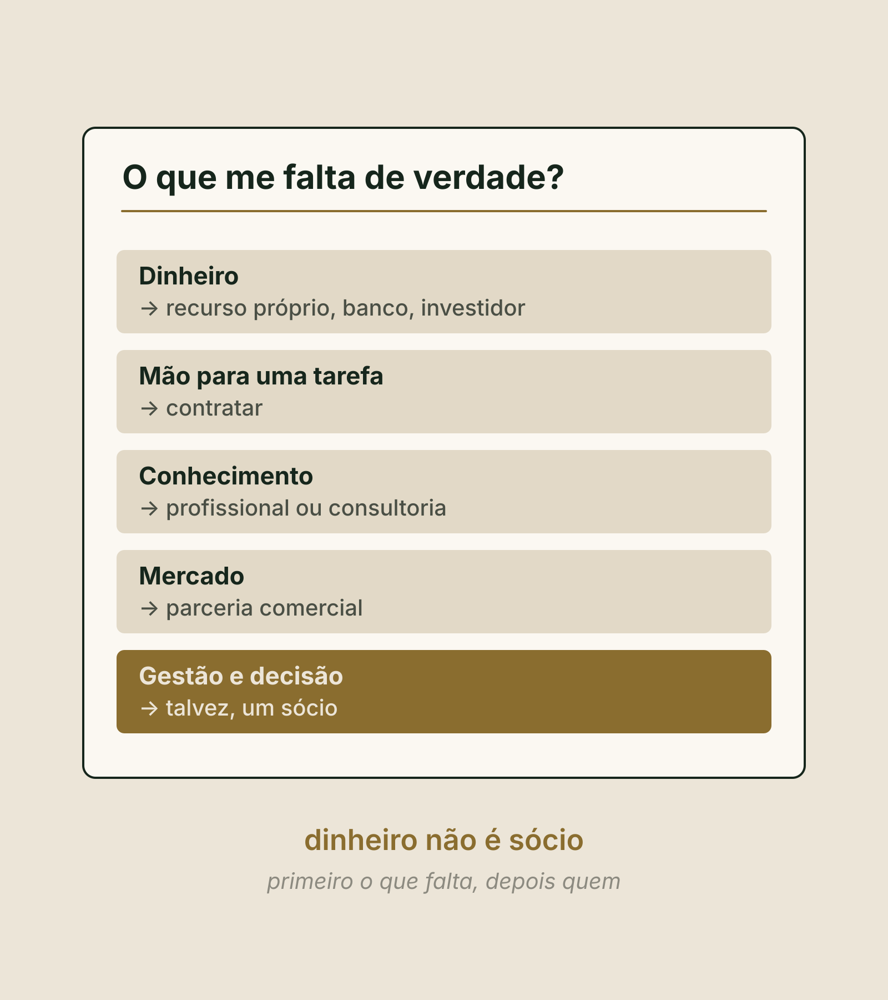
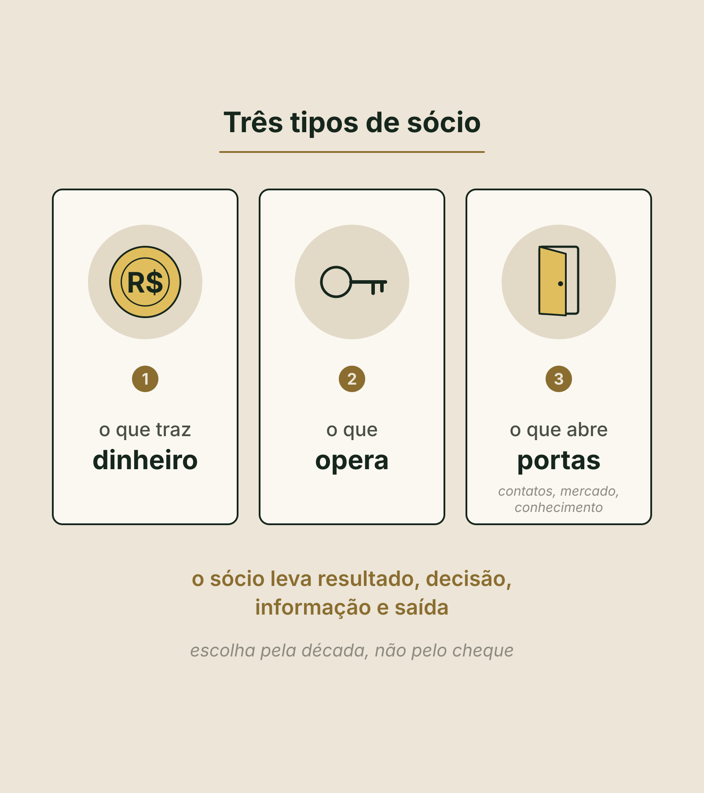
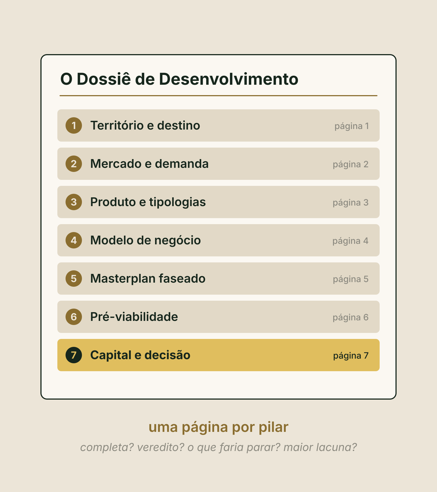
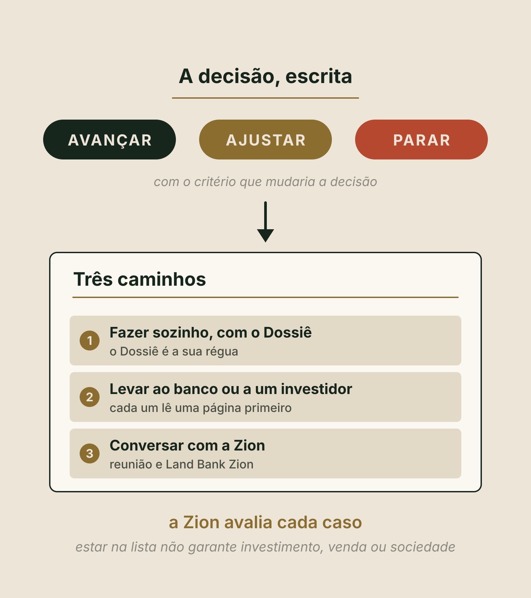

Método Zion · Pilar 7 · O último pilar
Pilar 7
Capital e Dossiê
De onde vem o capital, e com quem. E a sua decisão, escrita. No fim, você baixa o seu Dossiê de Desenvolvimento completo, das páginas 0 a 7.
O que você vai fazer aqui
Assistir, responder e sair com o Dossiê
Assistir
Dois vídeos curtos, um por bloco. Eles aparecem aqui dentro, no ponto certo.
Responder
Uma pergunta por tela, logo depois do trecho que a explica. Cada resposta fica salva na hora, neste aparelho.
Sair com o Dossiê
No fim, a página 7, Capital e decisão, e o seu Dossiê de Desenvolvimento completo em PDF, das páginas 0 a 7.
DicaTenha à mão a sua Pré-viabilidade, a página 6. Use os botões lá embaixo, ou as setas do teclado, para avançar.
No fim deste pilar, você sabe
Como pagar, com quem, e o que decidir
- As três perguntas de sim ou não que vêm antes de qualquer dinheiro.
- O pedido certo, sem número redondo, e as seis fontes de capital, cada uma com o seu preço.
- Se o que te falta é dinheiro ou um sócio, e qual dos três tipos de sócio.
- As quatro perguntas de cada página, a página mais fraca, a decisão e os três caminhos.
Retomada do Pilar 6 · responda de cabeça
Dos três cenários da sua pré-viabilidade, qual é o que precisa funcionar?
O conservador, o cenário mais fraco. O otimista é teto, não meta.
Retomada do Pilar 6 · responda de cabeça
O terreno já é seu e fica fora da folha de oito linhas. Então ele é de graça?
É dinheiro preso no projeto. E a outra linha à parte, o capital de giro, entra na conta.
Retomada do Pilar 6 · responda de cabeça
Na Marina, em quanto tempo o dinheiro volta no cenário conservador?
Pouco mais de seis anos, pela referência da Zion. É uma conta a trocar por cotação escrita.
Vídeo 1 de 2 · Bloco 1 · De onde vem o capital, e com quem
A frase que mais ouvimos
"Tenho o terreno, mas não tenho o dinheiro"
- Se essa é a sua frase, está tudo bem.
- Mas terreno parado quase nunca é falta de dinheiro. É falta de ordem.
- Lembra da pescaria do Marco Zero? Linha sem isca não traz peixe. O plano é a isca.
Antes de pensar em quem tem dinheiro
Três perguntas de sim ou não
| Pergunta | Onde se responde |
|---|---|
| 1. Se o dinheiro aparecesse amanhã, eu sei o que construir, quantas unidades e para quem? | Páginas 3, 4 e 5 |
| 2. Sei a diária que o meu produto sustenta, com dado, e não com palpite? | Páginas 2 e 3 |
| 3. Sei em quanto tempo o dinheiro volta, nos três cenários? | Página 6 |
Um sim sem documento ao lado vale um não.
E o que as respostas dizem
Três sim, ou um não
Três sim
Aí falta capital. E o caminho é buscar, com a conta na mão.
Um não
Não falta capital. Falta a decisão que vem antes dele.
Quiz relâmpago · clique numa resposta
Duas das três perguntas são sim, e uma é não. O que falta?
Um não basta. Não falta capital: falta a decisão que vem antes dele.
Quando perguntarem quanto você precisa
Nada de número redondo
Na ferramenta, o pedido vai linha por linha: a obra da fase um, com a reserva dentro, o giro, o que falta pagar do terreno, o custo de buscar o dinheiro e o que você põe.
As fontes, em linguagem de padaria
São seis, e cada uma cobra um preço diferente
Recurso próprio
O mais rápido.
Banco
Quer garantia e uma operação que pague a parcela.
Investidor
Leva uma parte do negócio.
Sócio
Esse fica para daqui a pouco.
Pré-venda
Só quando o seu modelo é de venda.
Parceria com quem opera
Quando o que falta é quem saiba operar.
Fonte 1 · O recurso próprio
Não se mede pelo saldo. Se mede por quanto você pode perder
- É o mais rápido. Mas a pergunta é quanto você pode perder sem comprometer a sua vida.
- Esse é o seu limite de perda. Ele se escreve antes, em casa, com quem divide a vida com você.
- E dinheiro da família, só com contrato escrito, como se fosse de um desconhecido.
Fonte 2 · O banco, o financiamento
Quer garantia e uma operação que pague a parcela
A carência
É o aperto mais comum: a obra não gera caixa, e o banco quer receber logo.
A garantia
"A garantia é o meu terreno" é decisão, não detalhe.
O aval pessoal
Pode pôr a sua casa na conta.
Linha e taxa, quem confirma é o banco e o contador.
Fonte 3 · O investidor
Não cobra juro. Leva uma parte do negócio
- Quer conhecer a tese e quem conduz.
- Juro zero não é dinheiro de graça.
- A fonte 4, o sócio, fica para daqui a pouco.
Quiz relâmpago · clique numa resposta
O investidor não cobra juro. Então ele é o dinheiro mais barato?
Juro zero não é dinheiro de graça. O investidor leva uma parte do negócio, e quer conhecer a tese e quem conduz.
Fontes 5 e 6
A pré-venda e a parceria com quem opera
A pré-venda
Só quando o seu modelo é de venda, como no Pilar 4. Pré-venda não é receita: é uma obrigação com cara de caixa. Sem histórico de operação, você venderia uma renda que ainda não existe. Só com advogado e contador.
A parceria com quem opera
Às vezes o que falta não é dinheiro, é quem saiba operar. E quem opera é a primeira pergunta de qualquer banco ou investidor.
Antes de marcar as suas
Duas ou três fontes pequenas costumam ser mais viáveis do que uma grande
- Isso vale em projeto pequeno e faseado.
- Confira se duas fontes não pedem o mesmo terreno como garantia.
- E nenhuma é garantida: cada uma avalia o seu caso.
Agora, o sócio
Não confunda precisar de dinheiro com precisar de um sócio
- Dinheiro: as fontes que você acabou de ver.
- Mão para uma tarefa: você contrata.
- Conhecimento: um profissional ou uma consultoria.
- Mercado: uma parceria comercial.
- Só quando falta gestão e decisão, talvez seja um sócio.

Quiz relâmpago · clique numa resposta
Um amigo oferece cuidar das redes sociais do projeto em troca de uma parte do negócio. O que perguntar primeiro?
Mão para uma tarefa: você contrata. Antes de dividir o negócio, pergunte: dá para contratar? O que ele traz vale a parte que eu entrego?
Os três são legítimos
Existem três tipos de sócio
- O que traz dinheiro.
- O que opera.
- O que abre portas: contatos, mercado, conhecimento que você não tem.
O problema começa quando você precisa de um e escolhe outro.

Antes de dividir o negócio, pergunte
Seis perguntas, e só depois o sócio
- Preciso de capital ou de um parceiro?
- Dá para contratar?
- Ele traz o que eu não tenho?
- Queremos a mesma coisa?
- Quem decide o quê está escrito?
- O que ele traz vale a parte que eu entrego?
O sócio leva resultado, decisão, informação e saída.
Escolha o sócio pela década, não pelo cheque.
E quem não tem dinheiro
Também tem o que pôr na mesa
Terra
O terreno vale como aporte.
Trabalho
Quem conduz e executa também põe.
Conhecimento
O que você sabe e o outro não sabe.
Não existe percentual universal: pesa o que cada um põe, o risco, a responsabilidade e a dedicação. Como escrever, com advogado e contador.
A Marina faz as três perguntas
| Pergunta | A resposta da Marina |
|---|---|
| O que construir | Sim: três cabanas de glamping para casal. |
| A diária | Sim: R$ 645, medida. E a conta do Pilar 6 fecha com ela. |
| O tempo de volta | Sim: pouco mais de seis anos no conservador. |
Três sim. O terreno é dela, e quem opera ela já tem: uma pessoa local. O que falta é capital para a fase um.
Antes do bloco dois · a sua lição
O seu capital no papel
As três perguntas, quanto você pode perder, as seis fontes e o que te falta de verdade. Onde aparece "não sei", é tarefa da semana.
Vídeo 2 de 2 · Bloco 2 · O Dossiê e a decisão
O seu Dossiê de Desenvolvimento
Sete páginas, uma por pilar
- O território
- O mercado
- O produto
- O modelo de negócio
- O masterplan faseado
- A pré-viabilidade
- O capital e a decisão, que você fecha hoje
Antes delas, a página 0: o diagnóstico prévio do Marco Zero.

O que este aparelho já tem do seu Dossiê
As suas páginas, hoje
Só aparece o que foi salvo neste aparelho e neste navegador. Se fez uma página no papel ou em outro aparelho, considere-a mesmo assim.
A diferença não está na apresentação
Bonito ou defensável?
Um Dossiê bonito
Convence quem já quer acreditar.
Um Dossiê defensável
Aguenta a pergunta de quem não tem interesse nenhum em acreditar: o banco, o investidor, o sócio desconfiado. E você mesmo, daqui a seis meses.
O que não foi escrito não existe na hora da pergunta.
Cada página passa por quatro perguntas
Uma página está pronta quando responde às quatro
Está completa?
Com a fonte e a data de cada número.
Qual é o veredito?
Uma palavra, escrita.
O que faria você parar?
O fato que mudaria a decisão.
Qual é a maior lacuna?
Quem resolve, e até quando.
Uma linha em branco, declarada, vale. Um número redondo sem fonte, não.
Agora leia as sete páginas juntas
O projeto anda na velocidade da página mais fraca
- Não é votação: seis páginas boas não compram a que manda parar.
- Se a página que trava é o território, nada do que vem depois se sustenta.
Quiz relâmpago · clique numa resposta
Num projeto, seis páginas dizem avançar e uma diz parar. O que ele faz?
Não é votação. Seis páginas boas não compram a que manda parar.
A decisão, escrita
São três palavras
- Avançar: as páginas sustentam o próximo passo, e você sabe qual é.
- Ajustar: o projeto tem futuro, mas uma página pede mudança antes, no tamanho, no produto, no preço ou na fase.
- Parar: a conta não fecha neste desenho, ou o risco não cabe na sua vida.

Uma palavra sobre parar
Parar não é fracasso
- Você descobriu no papel o que muita gente descobre com a obra pronta e o calendário vazio.
- Gastou caderno e algumas semanas, não uma obra. E o Dossiê continua seu.
- Decidir não fazer, com evidência, é um resultado válido.
Toda decisão vem com o critério que a mudaria
A frase que impede você de decidir pelo entusiasmo
"Se [o fato], então eu [avanço, ajusto ou paro]."
Toda decisão sem critério para mudar vira teimosia.
A Marina põe as sete páginas lado a lado
| Página | O que diz |
|---|---|
| Território | Lido |
| Mercado | Medido |
| Produto, modelo e masterplan | Decididos: três cabanas de glamping para casal, renda no degrau fácil, a fase um com uma pessoa local |
| Pré-viabilidade | Pouco mais de seis anos no cenário mais fraco |
| Capital e decisão | Avançar com a fase um. O próximo passo: trocar cada referência por cotação escrita. |
O critério dela: se o investimento passar de cerca de R$ 870 mil, ela volta à conta antes de assinar.
Com o Dossiê na mão
Existem três caminhos
Fazer sozinho, com o Dossiê
Se o investidor é você mesmo, quem precisa das respostas primeiro é você. O Dossiê vira a sua régua para cada gasto.
Levar ao banco ou a um investidor
As páginas são as mesmas. O banco lê a garantia e se a operação paga a parcela. O investidor lê a tese e quem conduz. Nenhum dos dois é garantido.
Conversar com a Zion
Projetos maiores, ou quem quer um olhar de fora, podem pedir uma reunião com o nosso fundador, Bruno Chaerk. E terrenos com o Dossiê feito podem pedir para entrar na lista do Land Bank Zion.
A Zion avalia cada caso. Estar na lista não garante investimento, venda ou sociedade.
Quiz relâmpago · clique numa resposta
Um terreno com o Dossiê feito entrou na lista do Land Bank Zion. O que isso garante?
A lista é a vitrine de terrenos estruturados. Estar nela não garante investimento, venda ou sociedade.
O Pilar 7 em uma tela
O que fica
- Terreno parado quase nunca é falta de dinheiro. É falta de ordem.
- Três perguntas de sim ou não vêm antes do dinheiro, e um não basta: falta a decisão que vem antes.
- São seis fontes, e cada uma cobra um preço; o recurso próprio se mede por quanto você pode perder.
- Não confunda precisar de dinheiro com precisar de um sócio, e escolha o sócio pela década.
- O projeto anda na velocidade da página mais fraca, e a decisão vem com o critério que a mudaria.
Para o Dossiê sair com o seu nome
Quem é você e onde fica o terreno
Fica salvo neste aparelho. Nada é enviado nesta aula: a ferramenta do Dossiê usa o seu e-mail só quando você pedir o mentor de IA, baixar o PDF ou enviar ao Land Bank.
As suas respostas já estão aqui. Confira, gere o resultado e baixe a página 7 do seu Dossiê, que sai junto com o Dossiê completo, das páginas 0 a 7. No fim, envie para o Land Bank da Zion.
Você começou com um terreno e uma dúvida. Termina com sete páginas e uma decisão escrita.
Com o Dossiê na mão, o próximo passo é a Zion Land Members: o cadastro do seu terreno no banco de áreas da Zion. A Zion avalia cada caso. Não é promessa de investimento, crédito, compra ou sociedade.
Abrir o cadastro da Zion Land MembersLembreteSalve o PDF na pasta Meu Dossiê. E se a sua decisão hoje é ajustar ou parar, o seu próximo passo é a sua maior lacuna.
Conteúdo educacional. A Marina é um exemplo ilustrativo e as contas são ilustrativas, na referência da Zion. Não é oferta de investimento nem recomendação de financiamento, de sociedade ou de qualquer fonte de capital, e não é promessa de renda, retorno, ocupação, crédito, investidor, sócio, compra, venda ou entrada no Land Bank Zion. Garantias, aval, sociedade, contratos e impostos: quem confirma no seu caso é o advogado, o contador e o banco. A Zion avalia cada caso.